Chapter_3
实验环境
- OS version:(Linux 3.9-1-686-pae #1 SMP Debian 3.9.6-1)
uname -srv - Kernel source versionv(3.9-1-686-pae/)
ls /lib/modules/
目录
1 Protect Mode
1.1 Understand the Protect Mode
- let's see an example at first
; ========================================== ; pmtest1.asm ; 编译方法：nasm pmtest1.asm -o pmtest1.bin ; ========================================== %include "pm.inc" ; 常量, 宏, 以及一些说明 org 07c00h jmp LABEL_BEGIN [SECTION .gdt] ; GDT ; 段基址, 段界限 , 属性 LABEL_GDT: Descriptor 0, 0, 0 ; 空描述符 LABEL_DESC_CODE32: Descriptor 0, SegCode32Len - 1, DA_C + DA_32; 非一致代码段 LABEL_DESC_VIDEO: Descriptor 0B8000h, 0ffffh, DA_DRW ; 显存首地址 ; GDT 结束 GdtLen equ $ - LABEL_GDT ; GDT长度 GdtPtr dw GdtLen - 1 ; GDT界限 dd 0 ; GDT基地址 ; GDT 选择子 SelectorCode32 equ LABEL_DESC_CODE32 - LABEL_GDT SelectorVideo equ LABEL_DESC_VIDEO - LABEL_GDT ; END of [SECTION .gdt] [SECTION .s16] [BITS 16] LABEL_BEGIN: mov ax, cs mov ds, ax mov es, ax mov ss, ax mov sp, 0100h ; 初始化 32 位代码段描述符 xor eax, eax mov ax, cs shl eax, 4 add eax, LABEL_SEG_CODE32 mov word [LABEL_DESC_CODE32 + 2], ax shr eax, 16 mov byte [LABEL_DESC_CODE32 + 4], al mov byte [LABEL_DESC_CODE32 + 7], ah ; 为加载 GDTR 作准备 xor eax, eax mov ax, ds shl eax, 4 add eax, LABEL_GDT ; eax <- gdt 基地址 mov dword [GdtPtr + 2], eax ; [GdtPtr + 2] <- gdt 基地址 ; 加载 GDTR lgdt [GdtPtr] ; 关中断 cli ; 打开地址线A20 in al, 92h or al, 00000010b out 92h, al ; 准备切换到保护模式 mov eax, cr0 or eax, 1 mov cr0, eax ; 真正进入保护模式 jmp dword SelectorCode32:0 ; 执行这一句会把 SelectorCode32 装入 cs, ; 并跳转到 Code32Selector:0 处 ; END of [SECTION .s16] [SECTION .s32]; 32 位代码段. 由实模式跳入. [BITS 32] LABEL_SEG_CODE32: mov ax, SelectorVideo mov gs, ax ; 视频段选择子(目的) mov edi, (80 * 11 + 79) * 2 ; 屏幕第 11 行, 第 79 列。 mov ah, 0Ch ; 0000: 黑底 1100: 红字 mov al, 'P' mov [gs:edi], ax ; 到此停止 jmp $ SegCode32Len equ $ - LABEL_SEG_CODE32 ; END of [SECTION .s32] - compile it
nasm pmtest1.asm -o pmtest1.bin
- write it to a.img
dd if=pmtest1.bin of=a.img bs=512 count=1 conv=notrunc
- run bochs
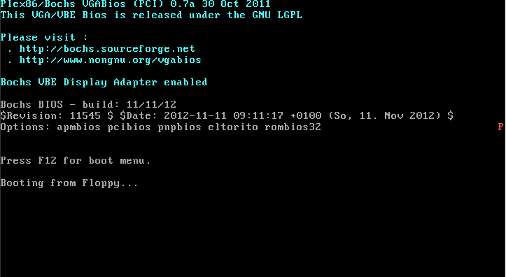
- Now we can see thereis a
red Pright the screen, here is the key code in pmtest1.asmmov edi, (80 * 11 + 79) * 2 ; 屏幕第 11 行, 第 79 列。 mov ah, 0Ch ; 0000: 黑底 1100: 红字
1.2 Whatif our program is larger than a boot sector(512 byte)?
1.2.1 There we have better Environment for Protect Mode
- get a FreeDos, rename it as freedos.img
wget http://www.ibiblio.org/pub/micro/pc-stuff/freedos/files/distributions/1.0/fdboot.img
- make a new fd
bximage
- modify our bochsrc
# what disk images will be used floppya: 1_44=freedos.img, status=inserted floppyb: 1_44=pm.img, status=inserted # choose the boot disk. boot: a
- start bochs
bochs
- here is freedos,
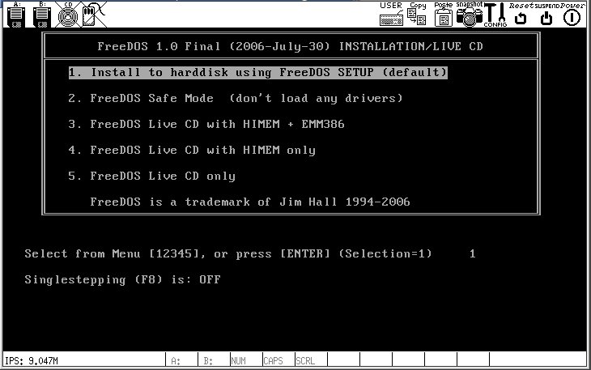
- change the pmtest1.asm line 8 07c00h to 0100h and recompile.
nasm pmtest1.asm -o pmtest1.com
- copy pmtest1.com to pm.img
sudo mount -o loop pm.img /mnt/floppy sudo cp pmtest1.com /mnt/floppy/ sudo umount /mnt/floppy
Question: can't mount the pm.img here.
1.3 GDT
1.3.1 GDT(Global Descriptor Table)
- Physical = Segment x 16 + Offset
- Segment Descriptor
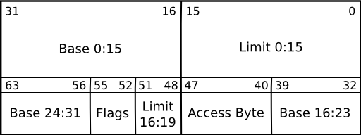
- Real Mode
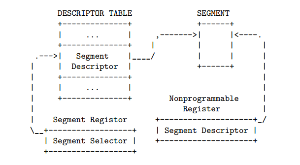
- Addressing

- We will see a logical address(SEG:OFFSET) is converted to linear address, linear address is Physical address.
1.3.2 From Real Mode to Protect Mode
- Prepare GDT
- Use lgdt to load gdtr
- Open A20
- Set PE position in cr0
- jmp to Protect Mode
1.4 After That, let's compile pmtest2.asm(GDT)
- This is The source code
; ========================================== ; pmtest2.asm ; 编译方法：nasm pmtest2.asm -o pmtest2.com ; ========================================== %include "pm.inc" ; 常量, 宏, 以及一些说明 org 0100h jmp LABEL_BEGIN [SECTION .gdt] ; GDT ; 段基址, 段界限 , 属性 LABEL_GDT: Descriptor 0, 0, 0 ; 空描述符 LABEL_DESC_NORMAL: Descriptor 0, 0ffffh, DA_DRW ; Normal 描述符 LABEL_DESC_CODE32: Descriptor 0, SegCode32Len-1, DA_C+DA_32; 非一致代码段, 32 LABEL_DESC_CODE16: Descriptor 0, 0ffffh, DA_C ; 非一致代码段, 16 LABEL_DESC_DATA: Descriptor 0, DataLen-1, DA_DRW ; Data LABEL_DESC_STACK: Descriptor 0, TopOfStack, DA_DRWA+DA_32; Stack, 32 位 LABEL_DESC_TEST: Descriptor 0500000h, 0ffffh, DA_DRW LABEL_DESC_VIDEO: Descriptor 0B8000h, 0ffffh, DA_DRW ; 显存首地址 ; GDT 结束 GdtLen equ $ - LABEL_GDT ; GDT长度 GdtPtr dw GdtLen - 1 ; GDT界限 dd 0 ; GDT基地址 ; GDT 选择子 SelectorNormal equ LABEL_DESC_NORMAL - LABEL_GDT SelectorCode32 equ LABEL_DESC_CODE32 - LABEL_GDT SelectorCode16 equ LABEL_DESC_CODE16 - LABEL_GDT SelectorData equ LABEL_DESC_DATA - LABEL_GDT SelectorStack equ LABEL_DESC_STACK - LABEL_GDT SelectorTest equ LABEL_DESC_TEST - LABEL_GDT SelectorVideo equ LABEL_DESC_VIDEO - LABEL_GDT ; END of [SECTION .gdt] [SECTION .data1] ; 数据段 ALIGN 32 [BITS 32] LABEL_DATA: SPValueInRealMode dw 0 ; 字符串 PMMessage: db "In Protect Mode now. ^-^", 0 ; 在保护模式中显示 OffsetPMMessage equ PMMessage - $$ StrTest: db "ABCDEFGHIJKLMNOPQRSTUVWXYZ", 0 OffsetStrTest equ StrTest - $$ DataLen equ $ - LABEL_DATA ; END of [SECTION .data1] ; 全局堆栈段 [SECTION .gs] ALIGN 32 [BITS 32] LABEL_STACK: times 512 db 0 TopOfStack equ $ - LABEL_STACK - 1 ; END of [SECTION .gs] [SECTION .s16] [BITS 16] LABEL_BEGIN: mov ax, cs mov ds, ax mov es, ax mov ss, ax mov sp, 0100h mov [LABEL_GO_BACK_TO_REAL+3], ax mov [SPValueInRealMode], sp ; 初始化 16 位代码段描述符 mov ax, cs movzx eax, ax shl eax, 4 add eax, LABEL_SEG_CODE16 mov word [LABEL_DESC_CODE16 + 2], ax shr eax, 16 mov byte [LABEL_DESC_CODE16 + 4], al mov byte [LABEL_DESC_CODE16 + 7], ah ; 初始化 32 位代码段描述符 xor eax, eax mov ax, cs shl eax, 4 add eax, LABEL_SEG_CODE32 mov word [LABEL_DESC_CODE32 + 2], ax shr eax, 16 mov byte [LABEL_DESC_CODE32 + 4], al mov byte [LABEL_DESC_CODE32 + 7], ah ; 初始化数据段描述符 xor eax, eax mov ax, ds shl eax, 4 add eax, LABEL_DATA mov word [LABEL_DESC_DATA + 2], ax shr eax, 16 mov byte [LABEL_DESC_DATA + 4], al mov byte [LABEL_DESC_DATA + 7], ah ; 初始化堆栈段描述符 xor eax, eax mov ax, ds shl eax, 4 add eax, LABEL_STACK mov word [LABEL_DESC_STACK + 2], ax shr eax, 16 mov byte [LABEL_DESC_STACK + 4], al mov byte [LABEL_DESC_STACK + 7], ah ; 为加载 GDTR 作准备 xor eax, eax mov ax, ds shl eax, 4 add eax, LABEL_GDT ; eax <- gdt 基地址 mov dword [GdtPtr + 2], eax ; [GdtPtr + 2] <- gdt 基地址 ; 加载 GDTR lgdt [GdtPtr] ; 关中断 cli ; 打开地址线A20 in al, 92h or al, 00000010b out 92h, al ; 准备切换到保护模式 mov eax, cr0 or eax, 1 mov cr0, eax ; 真正进入保护模式 jmp dword SelectorCode32:0 ; 执行这一句会把 SelectorCode32 装入 cs, 并跳转到 Code32Selector:0 处 ;;;;;;;;;;;;;;;;;;;;;;;;;;;;;;;;;;;;;;;;;;;;;;;;;;;;;;;;;;;;;;;;;;;;;;;;;;;;;;;;;;;;;;; LABEL_REAL_ENTRY: ; 从保护模式跳回到实模式就到了这里 mov ax, cs mov ds, ax mov es, ax mov ss, ax mov sp, [SPValueInRealMode] in al, 92h ; `. and al, 11111101b ; | 关闭 A20 地址线 out 92h, al ; / sti ; 开中断 mov ax, 4c00h ; `. int 21h ; / 回到 DOS ; END of [SECTION .s16] [SECTION .s32]; 32 位代码段. 由实模式跳入. [BITS 32] LABEL_SEG_CODE32: mov ax, SelectorData mov ds, ax ; 数据段选择子 mov ax, SelectorTest mov es, ax ; 测试段选择子 mov ax, SelectorVideo mov gs, ax ; 视频段选择子 mov ax, SelectorStack mov ss, ax ; 堆栈段选择子 mov esp, TopOfStack ; 下面显示一个字符串 mov ah, 0Ch ; 0000: 黑底 1100: 红字 xor esi, esi xor edi, edi mov esi, OffsetPMMessage ; 源数据偏移 mov edi, (80 * 10 + 0) * 2 ; 目的数据偏移。屏幕第 10 行, 第 0 列。 cld .1: lodsb test al, al jz .2 mov [gs:edi], ax add edi, 2 jmp .1 .2: ; 显示完毕 call DispReturn call TestRead call TestWrite call TestRead ; 到此停止 jmp SelectorCode16:0 ; ------------------------------------------------------------------------ TestRead: xor esi, esi mov ecx, 8 .loop: mov al, [es:esi] call DispAL inc esi loop .loop call DispReturn ret ; TestRead 结束----------------------------------------------------------- ; ------------------------------------------------------------------------ TestWrite: push esi push edi xor esi, esi xor edi, edi mov esi, OffsetStrTest ; 源数据偏移 cld .1: lodsb test al, al jz .2 mov [es:edi], al inc edi jmp .1 .2: pop edi pop esi ret ; TestWrite 结束---------------------------------------------------------- ; ------------------------------------------------------------------------ ; 显示 AL 中的数字 ; 默认地: ; 数字已经存在 AL 中 ; edi 始终指向要显示的下一个字符的位置 ; 被改变的寄存器: ; ax, edi ; ------------------------------------------------------------------------ DispAL: push ecx push edx mov ah, 0Ch ; 0000: 黑底 1100: 红字 mov dl, al shr al, 4 mov ecx, 2 .begin: and al, 01111b cmp al, 9 ja .1 add al, '0' jmp .2 .1: sub al, 0Ah add al, 'A' .2: mov [gs:edi], ax add edi, 2 mov al, dl loop .begin add edi, 2 pop edx pop ecx ret ; DispAL 结束------------------------------------------------------------- ; ------------------------------------------------------------------------ DispReturn: push eax push ebx mov eax, edi mov bl, 160 div bl and eax, 0FFh inc eax mov bl, 160 mul bl mov edi, eax pop ebx pop eax ret ; DispReturn 结束--------------------------------------------------------- SegCode32Len equ $ - LABEL_SEG_CODE32 ; END of [SECTION .s32] ; 16 位代码段. 由 32 位代码段跳入, 跳出后到实模式 [SECTION .s16code] ALIGN 32 [BITS 16] LABEL_SEG_CODE16: ; 跳回实模式: mov ax, SelectorNormal mov ds, ax mov es, ax mov fs, ax mov gs, ax mov ss, ax mov eax, cr0 and al, 11111110b mov cr0, eax LABEL_GO_BACK_TO_REAL: jmp 0:LABEL_REAL_ENTRY ; 段地址会在程序开始处被设置成正确的值 Code16Len equ $ - LABEL_SEG_CODE16 ; END of [SECTION .s16code] - Then compile it
nasm pmtest2.asm -o pmtest2.com
- See The output
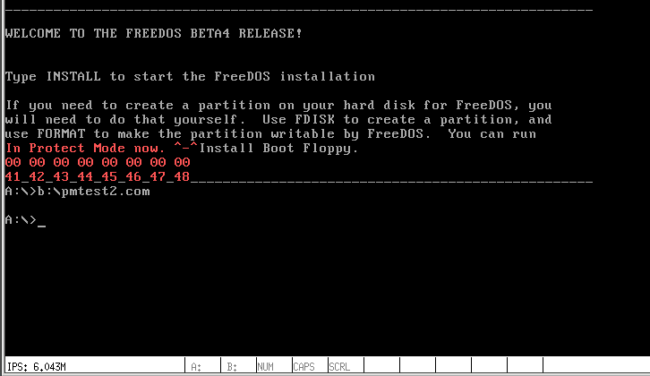
- The LDT is same as GDT, After the compile, This is the output
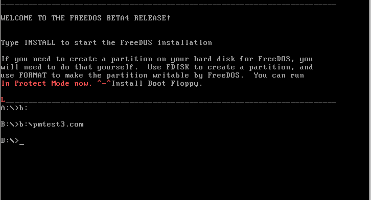
1.5 Privilege level
1.5.1 Gate Descriptor
- Call gates
- Interrupt gates
- Trap gates
- Task gates
1.5.2 A example of Call gates
- pmtest4.asm
; ========================================== ; pmtest4.asm ; 编译方法：nasm pmtest4.asm -o pmtest4.com ; ========================================== %include "pm.inc" ; 常量, 宏, 以及一些说明 org 0100h jmp LABEL_BEGIN [SECTION .gdt] ; GDT ; 段基址, 段界限 , 属性 LABEL_GDT: Descriptor 0, 0, 0 ; 空描述符 LABEL_DESC_NORMAL: Descriptor 0, 0ffffh, DA_DRW ; Normal 描述符 LABEL_DESC_CODE32: Descriptor 0, SegCode32Len-1, DA_C+DA_32; 非一致代码段,32 LABEL_DESC_CODE16: Descriptor 0, 0ffffh, DA_C ; 非一致代码段,16 LABEL_DESC_CODE_DEST: Descriptor 0,SegCodeDestLen-1, DA_C+DA_32; 非一致代码段,32 LABEL_DESC_DATA: Descriptor 0, DataLen-1, DA_DRW ; Data LABEL_DESC_STACK: Descriptor 0, TopOfStack, DA_DRWA+DA_32;Stack, 32 位 LABEL_DESC_LDT: Descriptor 0, LDTLen-1, DA_LDT ; LDT LABEL_DESC_VIDEO: Descriptor 0B8000h, 0ffffh, DA_DRW ; 显存首地址 ; 门 目标选择子,偏移,DCount, 属性 LABEL_CALL_GATE_TEST: Gate SelectorCodeDest, 0, 0, DA_386CGate+DA_DPL0 ; GDT 结束 GdtLen equ $ - LABEL_GDT ; GDT长度 GdtPtr dw GdtLen - 1 ; GDT界限 dd 0 ; GDT基地址 ; GDT 选择子 SelectorNormal equ LABEL_DESC_NORMAL - LABEL_GDT SelectorCode32 equ LABEL_DESC_CODE32 - LABEL_GDT SelectorCode16 equ LABEL_DESC_CODE16 - LABEL_GDT SelectorCodeDest equ LABEL_DESC_CODE_DEST - LABEL_GDT SelectorData equ LABEL_DESC_DATA - LABEL_GDT SelectorStack equ LABEL_DESC_STACK - LABEL_GDT SelectorLDT equ LABEL_DESC_LDT - LABEL_GDT SelectorVideo equ LABEL_DESC_VIDEO - LABEL_GDT SelectorCallGateTest equ LABEL_CALL_GATE_TEST - LABEL_GDT ; END of [SECTION .gdt] [SECTION .data1] ; 数据段 ALIGN 32 [BITS 32] LABEL_DATA: SPValueInRealMode dw 0 ; 字符串 PMMessage: db "In Protect Mode now. ^-^", 0 ; 进入保护模式后显示此字符串 OffsetPMMessage equ PMMessage - $$ StrTest: db "ABCDEFGHIJKLMNOPQRSTUVWXYZ", 0 OffsetStrTest equ StrTest - $$ DataLen equ $ - LABEL_DATA ; END of [SECTION .data1] ; 全局堆栈段 [SECTION .gs] ALIGN 32 [BITS 32] LABEL_STACK: times 512 db 0 TopOfStack equ $ - LABEL_STACK - 1 ; END of [SECTION .gs] [SECTION .s16] [BITS 16] LABEL_BEGIN: mov ax, cs mov ds, ax mov es, ax mov ss, ax mov sp, 0100h mov [LABEL_GO_BACK_TO_REAL+3], ax mov [SPValueInRealMode], sp ; 初始化 16 位代码段描述符 mov ax, cs movzx eax, ax shl eax, 4 add eax, LABEL_SEG_CODE16 mov word [LABEL_DESC_CODE16 + 2], ax shr eax, 16 mov byte [LABEL_DESC_CODE16 + 4], al mov byte [LABEL_DESC_CODE16 + 7], ah ; 初始化 32 位代码段描述符 xor eax, eax mov ax, cs shl eax, 4 add eax, LABEL_SEG_CODE32 mov word [LABEL_DESC_CODE32 + 2], ax shr eax, 16 mov byte [LABEL_DESC_CODE32 + 4], al mov byte [LABEL_DESC_CODE32 + 7], ah ; 初始化测试调用门的代码段描述符 xor eax, eax mov ax, cs shl eax, 4 add eax, LABEL_SEG_CODE_DEST mov word [LABEL_DESC_CODE_DEST + 2], ax shr eax, 16 mov byte [LABEL_DESC_CODE_DEST + 4], al mov byte [LABEL_DESC_CODE_DEST + 7], ah ; 初始化数据段描述符 xor eax, eax mov ax, ds shl eax, 4 add eax, LABEL_DATA mov word [LABEL_DESC_DATA + 2], ax shr eax, 16 mov byte [LABEL_DESC_DATA + 4], al mov byte [LABEL_DESC_DATA + 7], ah ; 初始化堆栈段描述符 xor eax, eax mov ax, ds shl eax, 4 add eax, LABEL_STACK mov word [LABEL_DESC_STACK + 2], ax shr eax, 16 mov byte [LABEL_DESC_STACK + 4], al mov byte [LABEL_DESC_STACK + 7], ah ; 初始化 LDT 在 GDT 中的描述符 xor eax, eax mov ax, ds shl eax, 4 add eax, LABEL_LDT mov word [LABEL_DESC_LDT + 2], ax shr eax, 16 mov byte [LABEL_DESC_LDT + 4], al mov byte [LABEL_DESC_LDT + 7], ah ; 初始化 LDT 中的描述符 xor eax, eax mov ax, ds shl eax, 4 add eax, LABEL_CODE_A mov word [LABEL_LDT_DESC_CODEA + 2], ax shr eax, 16 mov byte [LABEL_LDT_DESC_CODEA + 4], al mov byte [LABEL_LDT_DESC_CODEA + 7], ah ; 为加载 GDTR 作准备 xor eax, eax mov ax, ds shl eax, 4 add eax, LABEL_GDT ; eax <- gdt 基地址 mov dword [GdtPtr + 2], eax ; [GdtPtr + 2] <- gdt 基地址 ; 加载 GDTR lgdt [GdtPtr] ; 关中断 cli ; 打开地址线A20 in al, 92h or al, 00000010b out 92h, al ; 准备切换到保护模式 mov eax, cr0 or eax, 1 mov cr0, eax ; 真正进入保护模式 jmp dword SelectorCode32:0 ; 执行这一句会把 SelectorCode32 装入 cs, 并跳转到 Code32Selector:0 处 ;;;;;;;;;;;;;;;;;;;;;;;;;;;;;;;;;;;;;;;;;;;;;;;;;;;;;;;;;;;;;;;;;;;;;;;;;;;;;;;;;;;;;;; LABEL_REAL_ENTRY: ; 从保护模式跳回到实模式就到了这里 mov ax, cs mov ds, ax mov es, ax mov ss, ax mov sp, [SPValueInRealMode] in al, 92h ; ┓ and al, 11111101b ; ┣ 关闭 A20 地址线 out 92h, al ; ┛ sti ; 开中断 mov ax, 4c00h ; ┓ int 21h ; ┛回到 DOS ; END of [SECTION .s16] [SECTION .s32]; 32 位代码段. 由实模式跳入. [BITS 32] LABEL_SEG_CODE32: mov ax, SelectorData mov ds, ax ; 数据段选择子 mov ax, SelectorVideo mov gs, ax ; 视频段选择子 mov ax, SelectorStack mov ss, ax ; 堆栈段选择子 mov esp, TopOfStack ; 下面显示一个字符串 mov ah, 0Ch ; 0000: 黑底 1100: 红字 xor esi, esi xor edi, edi mov esi, OffsetPMMessage ; 源数据偏移 mov edi, (80 * 10 + 0) * 2 ; 目的数据偏移。屏幕第 10 行, 第 0 列。 cld .1: lodsb test al, al jz .2 mov [gs:edi], ax add edi, 2 jmp .1 .2: ; 显示完毕 call DispReturn ; 测试调用门（无特权级变换），将打印字母 'C' call SelectorCallGateTest:0 ;call SelectorCodeDest:0 ; Load LDT mov ax, SelectorLDT lldt ax jmp SelectorLDTCodeA:0 ; 跳入局部任务，将打印字母 'L'。 ; ------------------------------------------------------------------------ DispReturn: push eax push ebx mov eax, edi mov bl, 160 div bl and eax, 0FFh inc eax mov bl, 160 mul bl mov edi, eax pop ebx pop eax ret ; DispReturn 结束--------------------------------------------------------- SegCode32Len equ $ - LABEL_SEG_CODE32 ; END of [SECTION .s32] [SECTION .sdest]; 调用门目标段 [BITS 32] LABEL_SEG_CODE_DEST: ;jmp $ mov ax, SelectorVideo mov gs, ax ; 视频段选择子(目的) mov edi, (80 * 12 + 0) * 2 ; 屏幕第 12 行, 第 0 列。 mov ah, 0Ch ; 0000: 黑底 1100: 红字 mov al, 'C' mov [gs:edi], ax retf SegCodeDestLen equ $ - LABEL_SEG_CODE_DEST ; END of [SECTION .sdest] ; 16 位代码段. 由 32 位代码段跳入, 跳出后到实模式 [SECTION .s16code] ALIGN 32 [BITS 16] LABEL_SEG_CODE16: ; 跳回实模式: mov ax, SelectorNormal mov ds, ax mov es, ax mov fs, ax mov gs, ax mov ss, ax mov eax, cr0 and al, 11111110b mov cr0, eax LABEL_GO_BACK_TO_REAL: jmp 0:LABEL_REAL_ENTRY ; 段地址会在程序开始处被设置成正确的值 Code16Len equ $ - LABEL_SEG_CODE16 ; END of [SECTION .s16code] ; LDT [SECTION .ldt] ALIGN 32 LABEL_LDT: ; 段基址 段界限 , 属性 LABEL_LDT_DESC_CODEA: Descriptor 0, CodeALen - 1, DA_C + DA_32 ; Code, 32 位 LDTLen equ $ - LABEL_LDT ; LDT 选择子 SelectorLDTCodeA equ LABEL_LDT_DESC_CODEA - LABEL_LDT + SA_TIL ; END of [SECTION .ldt] ; CodeA (LDT, 32 位代码段) [SECTION .la] ALIGN 32 [BITS 32] LABEL_CODE_A: mov ax, SelectorVideo mov gs, ax ; 视频段选择子(目的) mov edi, (80 * 13 + 0) * 2 ; 屏幕第 13 行, 第 0 列。 mov ah, 0Ch ; 0000: 黑底 1100: 红字 mov al, 'L' mov [gs:edi], ax ; 准备经由16位代码段跳回实模式 jmp SelectorCode16:0 CodeALen equ $ - LABEL_CODE_A ; END of [SECTION .la] - compile it
nasm pmtest4.asm -o pmtest4.com
- See the output
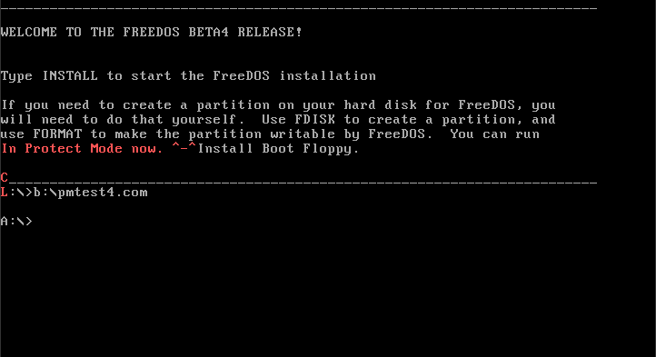
1.5.3 go to ring3
- compile pmtest5.asm
nasm pmtest5a.asm -o pmtest5a.com
- See the output
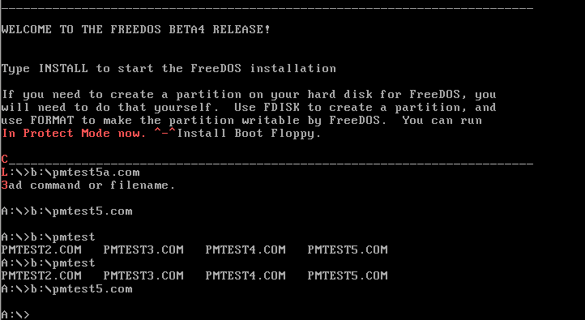
1.6 Page memory
1.6.1 Enable Paging
- Understand paging
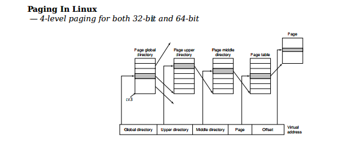
- source code
; ========================================== ; pmtest6.asm ; 编译方法：nasm pmtest6.asm -o pmtest6.com ; ========================================== %include "pm.inc" ; 常量, 宏, 以及一些说明 PageDirBase equ 200000h ; 页目录开始地址: 2M PageTblBase equ 201000h ; 页表开始地址: 2M+4K org 0100h jmp LABEL_BEGIN [SECTION .gdt] ; GDT ; 段基址, 段界限, 属性 LABEL_GDT: Descriptor 0, 0, 0 ; 空描述符 LABEL_DESC_NORMAL: Descriptor 0, 0ffffh, DA_DRW ; Normal 描述符 LABEL_DESC_PAGE_DIR: Descriptor PageDirBase, 4095, DA_DRW;Page Directory LABEL_DESC_PAGE_TBL: Descriptor PageTblBase, 1023, DA_DRW|DA_LIMIT_4K;Page Tables LABEL_DESC_CODE32: Descriptor 0, SegCode32Len-1, DA_C+DA_32 ; 非一致代码段, 32 LABEL_DESC_CODE16: Descriptor 0, 0ffffh, DA_C ; 非一致代码段, 16 LABEL_DESC_DATA: Descriptor 0, DataLen-1, DA_DRW ; Data LABEL_DESC_STACK: Descriptor 0, TopOfStack, DA_DRWA + DA_32 ; Stack, 32 位 LABEL_DESC_VIDEO: Descriptor 0B8000h, 0ffffh, DA_DRW ; 显存首地址 ; GDT 结束 GdtLen equ $ - LABEL_GDT ; GDT长度 GdtPtr dw GdtLen - 1 ; GDT界限 dd 0 ; GDT基地址 ; GDT 选择子 SelectorNormal equ LABEL_DESC_NORMAL - LABEL_GDT SelectorPageDir equ LABEL_DESC_PAGE_DIR - LABEL_GDT SelectorPageTbl equ LABEL_DESC_PAGE_TBL - LABEL_GDT SelectorCode32 equ LABEL_DESC_CODE32 - LABEL_GDT SelectorCode16 equ LABEL_DESC_CODE16 - LABEL_GDT SelectorData equ LABEL_DESC_DATA - LABEL_GDT SelectorStack equ LABEL_DESC_STACK - LABEL_GDT SelectorVideo equ LABEL_DESC_VIDEO - LABEL_GDT ; END of [SECTION .gdt] [SECTION .data1] ; 数据段 ALIGN 32 [BITS 32] LABEL_DATA: SPValueInRealMode dw 0 ; 字符串 PMMessage: db "In Protect Mode now. ^-^", 0 ; 进入保护模式后显示此字符串 OffsetPMMessage equ PMMessage - $$ DataLen equ $ - LABEL_DATA ; END of [SECTION .data1] ; 全局堆栈段 [SECTION .gs] ALIGN 32 [BITS 32] LABEL_STACK: times 512 db 0 TopOfStack equ $ - LABEL_STACK - 1 ; END of [SECTION .gs] [SECTION .s16] [BITS 16] LABEL_BEGIN: mov ax, cs mov ds, ax mov es, ax mov ss, ax mov sp, 0100h mov [LABEL_GO_BACK_TO_REAL+3], ax mov [SPValueInRealMode], sp ; 初始化 16 位代码段描述符 mov ax, cs movzx eax, ax shl eax, 4 add eax, LABEL_SEG_CODE16 mov word [LABEL_DESC_CODE16 + 2], ax shr eax, 16 mov byte [LABEL_DESC_CODE16 + 4], al mov byte [LABEL_DESC_CODE16 + 7], ah ; 初始化 32 位代码段描述符 xor eax, eax mov ax, cs shl eax, 4 add eax, LABEL_SEG_CODE32 mov word [LABEL_DESC_CODE32 + 2], ax shr eax, 16 mov byte [LABEL_DESC_CODE32 + 4], al mov byte [LABEL_DESC_CODE32 + 7], ah ; 初始化数据段描述符 xor eax, eax mov ax, ds shl eax, 4 add eax, LABEL_DATA mov word [LABEL_DESC_DATA + 2], ax shr eax, 16 mov byte [LABEL_DESC_DATA + 4], al mov byte [LABEL_DESC_DATA + 7], ah ; 初始化堆栈段描述符 xor eax, eax mov ax, ds shl eax, 4 add eax, LABEL_STACK mov word [LABEL_DESC_STACK + 2], ax shr eax, 16 mov byte [LABEL_DESC_STACK + 4], al mov byte [LABEL_DESC_STACK + 7], ah ; 为加载 GDTR 作准备 xor eax, eax mov ax, ds shl eax, 4 add eax, LABEL_GDT ; eax <- gdt 基地址 mov dword [GdtPtr + 2], eax ; [GdtPtr + 2] <- gdt 基地址 ; 加载 GDTR lgdt [GdtPtr] ; 关中断 cli ; 打开地址线A20 in al, 92h or al, 00000010b out 92h, al ; 准备切换到保护模式 mov eax, cr0 or eax, 1 mov cr0, eax ; 真正进入保护模式 jmp dword SelectorCode32:0 ; 执行这一句会把 SelectorCode32 装入 cs, 并跳转到 Code32Selector:0 处 ;;;;;;;;;;;;;;;;;;;;;;;;;;;;;;;;;;;;;;;;;;;;;;;;;;;;;;;;;;;;;;;;;;;;;;;;;;;;;;;;;;;;;;; LABEL_REAL_ENTRY: ; 从保护模式跳回到实模式就到了这里 mov ax, cs mov ds, ax mov es, ax mov ss, ax mov sp, [SPValueInRealMode] in al, 92h ; ┓ and al, 11111101b ; ┣ 关闭 A20 地址线 out 92h, al ; ┛ sti ; 开中断 mov ax, 4c00h ; ┓ int 21h ; ┛回到 DOS ; END of [SECTION .s16] [SECTION .s32]; 32 位代码段. 由实模式跳入. [BITS 32] LABEL_SEG_CODE32: call SetupPaging mov ax, SelectorData mov ds, ax ; 数据段选择子 mov ax, SelectorVideo mov gs, ax ; 视频段选择子 mov ax, SelectorStack mov ss, ax ; 堆栈段选择子 mov esp, TopOfStack ; 下面显示一个字符串 mov ah, 0Ch ; 0000: 黑底 1100: 红字 xor esi, esi xor edi, edi mov esi, OffsetPMMessage ; 源数据偏移 mov edi, (80 * 10 + 0) * 2 ; 目的数据偏移。屏幕第 10 行, 第 0 列。 cld .1: lodsb test al, al jz .2 mov [gs:edi], ax add edi, 2 jmp .1 .2: ; 显示完毕 ; 到此停止 jmp SelectorCode16:0 ; 启动分页机制 -------------------------------------------------------------- SetupPaging: ; 为简化处理, 所有线性地址对应相等的物理地址. ; 首先初始化页目录 mov ax, SelectorPageDir ; 此段首地址为 PageDirBase mov es, ax mov ecx, 1024 ; 共 1K 个表项 xor edi, edi xor eax, eax mov eax, PageTblBase | PG_P | PG_USU | PG_RWW .1: stosd add eax, 4096 ; 为了简化, 所有页表在内存中是连续的. loop .1 ; 再初始化所有页表 (1K 个, 4M 内存空间) mov ax, SelectorPageTbl ; 此段首地址为 PageTblBase mov es, ax mov ecx, 1024 * 1024 ; 共 1M 个页表项, 也即有 1M 个页 xor edi, edi xor eax, eax mov eax, PG_P | PG_USU | PG_RWW .2: stosd add eax, 4096 ; 每一页指向 4K 的空间 loop .2 mov eax, PageDirBase mov cr3, eax mov eax, cr0 or eax, 80000000h mov cr0, eax jmp short .3 .3: nop ret ; 分页机制启动完毕 ---------------------------------------------------------- SegCode32Len equ $ - LABEL_SEG_CODE32 ; END of [SECTION .s32] ; 16 位代码段. 由 32 位代码段跳入, 跳出后到实模式 [SECTION .s16code] ALIGN 32 [BITS 16] LABEL_SEG_CODE16: ; 跳回实模式: mov ax, SelectorNormal mov ds, ax mov es, ax mov fs, ax mov gs, ax mov ss, ax mov eax, cr0 and eax, 7FFFFFFEh ; PE=0, PG=0 mov cr0, eax LABEL_GO_BACK_TO_REAL: jmp 0:LABEL_REAL_ENTRY ; 段地址会在程序开始处被设置成正确的值 Code16Len equ $ - LABEL_SEG_CODE16 ; END of [SECTION .s16code]
1.6.2 Show the memory information
- compile pmtest7.asm
nasm pmtest7.asm -o pmtest7.com
- See the output
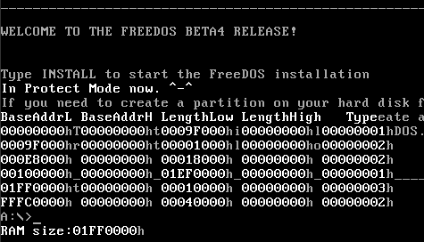
1.6.3 move forward to paging
- begin
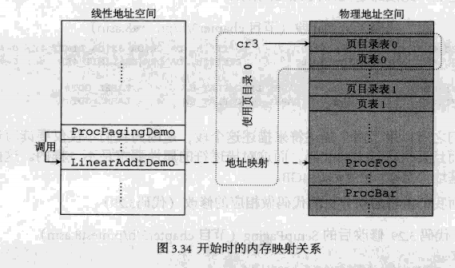
- end
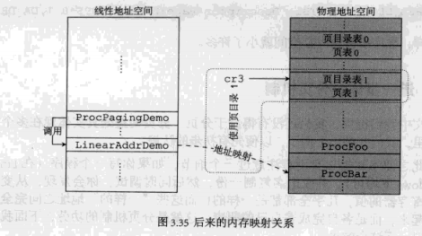
- source code
; ========================================== ; pmtest8.asm ; 编译方法：nasm pmtest8.asm -o pmtest8.com ; ========================================== %include "pm.inc" ; 常量, 宏, 以及一些说明 PageDirBase0 equ 200000h ; 页目录开始地址: 2M PageTblBase0 equ 201000h ; 页表开始地址: 2M + 4K PageDirBase1 equ 210000h ; 页目录开始地址: 2M + 64K PageTblBase1 equ 211000h ; 页表开始地址: 2M + 64K + 4K LinearAddrDemo equ 00401000h ProcFoo equ 00401000h ProcBar equ 00501000h ProcPagingDemo equ 00301000h org 0100h jmp LABEL_BEGIN [SECTION .gdt] ; GDT ; 段基址, 段界限, 属性 LABEL_GDT: Descriptor 0, 0, 0 ; 空描述符 LABEL_DESC_NORMAL: Descriptor 0, 0ffffh, DA_DRW ; Normal 描述符 LABEL_DESC_FLAT_C: Descriptor 0, 0fffffh, DA_CR|DA_32|DA_LIMIT_4K; 0~4G LABEL_DESC_FLAT_RW: Descriptor 0, 0fffffh, DA_DRW|DA_LIMIT_4K ; 0~4G LABEL_DESC_CODE32: Descriptor 0, SegCode32Len-1, DA_CR|DA_32 ; 非一致代码段, 32 LABEL_DESC_CODE16: Descriptor 0, 0ffffh, DA_C ; 非一致代码段, 16 LABEL_DESC_DATA: Descriptor 0, DataLen-1, DA_DRW ; Data LABEL_DESC_STACK: Descriptor 0, TopOfStack, DA_DRWA|DA_32 ; Stack, 32 位 LABEL_DESC_VIDEO: Descriptor 0B8000h, 0ffffh, DA_DRW ; 显存首地址 ; GDT 结束 GdtLen equ $ - LABEL_GDT ; GDT长度 GdtPtr dw GdtLen - 1 ; GDT界限 dd 0 ; GDT基地址 ; GDT 选择子 SelectorNormal equ LABEL_DESC_NORMAL - LABEL_GDT SelectorFlatC equ LABEL_DESC_FLAT_C - LABEL_GDT SelectorFlatRW equ LABEL_DESC_FLAT_RW - LABEL_GDT SelectorCode32 equ LABEL_DESC_CODE32 - LABEL_GDT SelectorCode16 equ LABEL_DESC_CODE16 - LABEL_GDT SelectorData equ LABEL_DESC_DATA - LABEL_GDT SelectorStack equ LABEL_DESC_STACK - LABEL_GDT SelectorVideo equ LABEL_DESC_VIDEO - LABEL_GDT ; END of [SECTION .gdt] [SECTION .data1] ; 数据段 ALIGN 32 [BITS 32] LABEL_DATA: ; 实模式下使用这些符号 ; 字符串 _szPMMessage: db "In Protect Mode now. ^-^", 0Ah, 0Ah, 0 ; 进入保护模式后显示此字符串 _szMemChkTitle: db "BaseAddrL BaseAddrH LengthLow LengthHigh Type", 0Ah, 0 ; 进入保护模式后显示此字符串 _szRAMSize db "RAM size:", 0 _szReturn db 0Ah, 0 ; 变量 _wSPValueInRealMode dw 0 _dwMCRNumber: dd 0 ; Memory Check Result _dwDispPos: dd (80 * 6 + 0) * 2 ; 屏幕第 6 行, 第 0 列。 _dwMemSize: dd 0 _ARDStruct: ; Address Range Descriptor Structure _dwBaseAddrLow: dd 0 _dwBaseAddrHigh: dd 0 _dwLengthLow: dd 0 _dwLengthHigh: dd 0 _dwType: dd 0 _PageTableNumber dd 0 _MemChkBuf: times 256 db 0 ; 保护模式下使用这些符号 szPMMessage equ _szPMMessage - $$ szMemChkTitle equ _szMemChkTitle - $$ szRAMSize equ _szRAMSize - $$ szReturn equ _szReturn - $$ dwDispPos equ _dwDispPos - $$ dwMemSize equ _dwMemSize - $$ dwMCRNumber equ _dwMCRNumber - $$ ARDStruct equ _ARDStruct - $$ dwBaseAddrLow equ _dwBaseAddrLow - $$ dwBaseAddrHigh equ _dwBaseAddrHigh - $$ dwLengthLow equ _dwLengthLow - $$ dwLengthHigh equ _dwLengthHigh - $$ dwType equ _dwType - $$ MemChkBuf equ _MemChkBuf - $$ PageTableNumber equ _PageTableNumber- $$ DataLen equ $ - LABEL_DATA ; END of [SECTION .data1] ; 全局堆栈段 [SECTION .gs] ALIGN 32 [BITS 32] LABEL_STACK: times 512 db 0 TopOfStack equ $ - LABEL_STACK - 1 ; END of [SECTION .gs] [SECTION .s16] [BITS 16] LABEL_BEGIN: mov ax, cs mov ds, ax mov es, ax mov ss, ax mov sp, 0100h mov [LABEL_GO_BACK_TO_REAL+3], ax mov [_wSPValueInRealMode], sp ; 得到内存数 mov ebx, 0 mov di, _MemChkBuf .loop: mov eax, 0E820h mov ecx, 20 mov edx, 0534D4150h int 15h jc LABEL_MEM_CHK_FAIL add di, 20 inc dword [_dwMCRNumber] cmp ebx, 0 jne .loop jmp LABEL_MEM_CHK_OK LABEL_MEM_CHK_FAIL: mov dword [_dwMCRNumber], 0 LABEL_MEM_CHK_OK: ; 初始化 16 位代码段描述符 mov ax, cs movzx eax, ax shl eax, 4 add eax, LABEL_SEG_CODE16 mov word [LABEL_DESC_CODE16 + 2], ax shr eax, 16 mov byte [LABEL_DESC_CODE16 + 4], al mov byte [LABEL_DESC_CODE16 + 7], ah ; 初始化 32 位代码段描述符 xor eax, eax mov ax, cs shl eax, 4 add eax, LABEL_SEG_CODE32 mov word [LABEL_DESC_CODE32 + 2], ax shr eax, 16 mov byte [LABEL_DESC_CODE32 + 4], al mov byte [LABEL_DESC_CODE32 + 7], ah ; 初始化数据段描述符 xor eax, eax mov ax, ds shl eax, 4 add eax, LABEL_DATA mov word [LABEL_DESC_DATA + 2], ax shr eax, 16 mov byte [LABEL_DESC_DATA + 4], al mov byte [LABEL_DESC_DATA + 7], ah ; 初始化堆栈段描述符 xor eax, eax mov ax, ds shl eax, 4 add eax, LABEL_STACK mov word [LABEL_DESC_STACK + 2], ax shr eax, 16 mov byte [LABEL_DESC_STACK + 4], al mov byte [LABEL_DESC_STACK + 7], ah ; 为加载 GDTR 作准备 xor eax, eax mov ax, ds shl eax, 4 add eax, LABEL_GDT ; eax <- gdt 基地址 mov dword [GdtPtr + 2], eax ; [GdtPtr + 2] <- gdt 基地址 ; 加载 GDTR lgdt [GdtPtr] ; 关中断 cli ; 打开地址线A20 in al, 92h or al, 00000010b out 92h, al ; 准备切换到保护模式 mov eax, cr0 or eax, 1 mov cr0, eax ; 真正进入保护模式 jmp dword SelectorCode32:0 ; 执行这一句会把 SelectorCode32 装入 cs, 并跳转到 Code32Selector:0 处 ;;;;;;;;;;;;;;;;;;;;;;;;;;;;;;;;;;;;;;;;;;;;;;;;;;;;;;;;;;;;;;;;;;;;;;;;;;;;;;;;;;;;;;; LABEL_REAL_ENTRY: ; 从保护模式跳回到实模式就到了这里 mov ax, cs mov ds, ax mov es, ax mov ss, ax mov sp, [_wSPValueInRealMode] in al, 92h ; ┓ and al, 11111101b ; ┣ 关闭 A20 地址线 out 92h, al ; ┛ sti ; 开中断 mov ax, 4c00h ; ┓ int 21h ; ┛回到 DOS ; END of [SECTION .s16] [SECTION .s32]; 32 位代码段. 由实模式跳入. [BITS 32] LABEL_SEG_CODE32: mov ax, SelectorData mov ds, ax ; 数据段选择子 mov es, ax mov ax, SelectorVideo mov gs, ax ; 视频段选择子 mov ax, SelectorStack mov ss, ax ; 堆栈段选择子 mov esp, TopOfStack ; 下面显示一个字符串 push szPMMessage call DispStr add esp, 4 push szMemChkTitle call DispStr add esp, 4 call DispMemSize ; 显示内存信息 call PagingDemo ; 演示改变页目录的效果 ; 到此停止 jmp SelectorCode16:0 ; 启动分页机制 -------------------------------------------------------------- SetupPaging: ; 根据内存大小计算应初始化多少PDE以及多少页表 xor edx, edx mov eax, [dwMemSize] mov ebx, 400000h ; 400000h = 4M = 4096 * 1024, 一个页表对应的内存大小 div ebx mov ecx, eax ; 此时 ecx 为页表的个数，也即 PDE 应该的个数 test edx, edx jz .no_remainder inc ecx ; 如果余数不为 0 就需增加一个页表 .no_remainder: mov [PageTableNumber], ecx ; 暂存页表个数 ; 为简化处理, 所有线性地址对应相等的物理地址. 并且不考虑内存空洞. ; 首先初始化页目录 mov ax, SelectorFlatRW mov es, ax mov edi, PageDirBase0 ; 此段首地址为 PageDirBase0 xor eax, eax mov eax, PageTblBase0 | PG_P | PG_USU | PG_RWW .1: stosd add eax, 4096 ; 为了简化, 所有页表在内存中是连续的. loop .1 ; 再初始化所有页表 mov eax, [PageTableNumber] ; 页表个数 mov ebx, 1024 ; 每个页表 1024 个 PTE mul ebx mov ecx, eax ; PTE个数 = 页表个数 * 1024 mov edi, PageTblBase0 ; 此段首地址为 PageTblBase0 xor eax, eax mov eax, PG_P | PG_USU | PG_RWW .2: stosd add eax, 4096 ; 每一页指向 4K 的空间 loop .2 mov eax, PageDirBase0 mov cr3, eax mov eax, cr0 or eax, 80000000h mov cr0, eax jmp short .3 .3: nop ret ; 分页机制启动完毕 ---------------------------------------------------------- ; 测试分页机制 -------------------------------------------------------------- PagingDemo: mov ax, cs mov ds, ax mov ax, SelectorFlatRW mov es, ax push LenFoo push OffsetFoo push ProcFoo call MemCpy add esp, 12 push LenBar push OffsetBar push ProcBar call MemCpy add esp, 12 push LenPagingDemoAll push OffsetPagingDemoProc push ProcPagingDemo call MemCpy add esp, 12 mov ax, SelectorData mov ds, ax ; 数据段选择子 mov es, ax call SetupPaging ; 启动分页 call SelectorFlatC:ProcPagingDemo call PSwitch ; 切换页目录，改变地址映射关系 call SelectorFlatC:ProcPagingDemo ret ; --------------------------------------------------------------------------- ; 切换页表 ------------------------------------------------------------------ PSwitch: ; 初始化页目录 mov ax, SelectorFlatRW mov es, ax mov edi, PageDirBase1 ; 此段首地址为 PageDirBase1 xor eax, eax mov eax, PageTblBase1 | PG_P | PG_USU | PG_RWW mov ecx, [PageTableNumber] .1: stosd add eax, 4096 ; 为了简化, 所有页表在内存中是连续的. loop .1 ; 再初始化所有页表 mov eax, [PageTableNumber] ; 页表个数 mov ebx, 1024 ; 每个页表 1024 个 PTE mul ebx mov ecx, eax ; PTE个数 = 页表个数 * 1024 mov edi, PageTblBase1 ; 此段首地址为 PageTblBase1 xor eax, eax mov eax, PG_P | PG_USU | PG_RWW .2: stosd add eax, 4096 ; 每一页指向 4K 的空间 loop .2 ; 在此假设内存是大于 8M 的 mov eax, LinearAddrDemo shr eax, 22 mov ebx, 4096 mul ebx mov ecx, eax mov eax, LinearAddrDemo shr eax, 12 and eax, 03FFh ; 1111111111b (10 bits) mov ebx, 4 mul ebx add eax, ecx add eax, PageTblBase1 mov dword [es:eax], ProcBar | PG_P | PG_USU | PG_RWW mov eax, PageDirBase1 mov cr3, eax jmp short .3 .3: nop ret ; --------------------------------------------------------------------------- PagingDemoProc: OffsetPagingDemoProc equ PagingDemoProc - $$ mov eax, LinearAddrDemo call eax retf LenPagingDemoAll equ $ - PagingDemoProc foo: OffsetFoo equ foo - $$ mov ah, 0Ch ; 0000: 黑底 1100: 红字 mov al, 'F' mov [gs:((80 * 17 + 0) * 2)], ax ; 屏幕第 17 行, 第 0 列。 mov al, 'o' mov [gs:((80 * 17 + 1) * 2)], ax ; 屏幕第 17 行, 第 1 列。 mov [gs:((80 * 17 + 2) * 2)], ax ; 屏幕第 17 行, 第 2 列。 ret LenFoo equ $ - foo bar: OffsetBar equ bar - $$ mov ah, 0Ch ; 0000: 黑底 1100: 红字 mov al, 'B' mov [gs:((80 * 18 + 0) * 2)], ax ; 屏幕第 18 行, 第 0 列。 mov al, 'a' mov [gs:((80 * 18 + 1) * 2)], ax ; 屏幕第 18 行, 第 1 列。 mov al, 'r' mov [gs:((80 * 18 + 2) * 2)], ax ; 屏幕第 18 行, 第 2 列。 ret LenBar equ $ - bar ; 显示内存信息 -------------------------------------------------------------- DispMemSize: push esi push edi push ecx mov esi, MemChkBuf mov ecx, [dwMCRNumber] ;for(int i=0;i<[MCRNumber];i++) // 每次得到一个ARDS(Address Range Descriptor Structure)结构 .loop: ;{ mov edx, 5 ; for(int j=0;j<5;j++) // 每次得到一个ARDS中的成员，共5个成员 mov edi, ARDStruct ; { // 依次显示：BaseAddrLow，BaseAddrHigh，LengthLow，LengthHigh，Type .1: ; push dword [esi] ; call DispInt ; DispInt(MemChkBuf[j*4]); // 显示一个成员 pop eax ; stosd ; ARDStruct[j*4] = MemChkBuf[j*4]; add esi, 4 ; dec edx ; cmp edx, 0 ; jnz .1 ; } call DispReturn ; printf("\n"); cmp dword [dwType], 1 ; if(Type == AddressRangeMemory) // AddressRangeMemory : 1, AddressRangeReserved : 2 jne .2 ; { mov eax, [dwBaseAddrLow] ; add eax, [dwLengthLow] ; cmp eax, [dwMemSize] ; if(BaseAddrLow + LengthLow > MemSize) jb .2 ; mov [dwMemSize], eax ; MemSize = BaseAddrLow + LengthLow; .2: ; } loop .loop ;} ; call DispReturn ;printf("\n"); push szRAMSize ; call DispStr ;printf("RAM size:"); add esp, 4 ; ; push dword [dwMemSize] ; call DispInt ;DispInt(MemSize); add esp, 4 ; pop ecx pop edi pop esi ret ; --------------------------------------------------------------------------- %include "lib.inc" ; 库函数 SegCode32Len equ $ - LABEL_SEG_CODE32 ; END of [SECTION .s32] ; 16 位代码段. 由 32 位代码段跳入, 跳出后到实模式 [SECTION .s16code] ALIGN 32 [BITS 16] LABEL_SEG_CODE16: ; 跳回实模式: mov ax, SelectorNormal mov ds, ax mov es, ax mov fs, ax mov gs, ax mov ss, ax mov eax, cr0 and eax, 7FFFFFFEh ; PE=0, PG=0 mov cr0, eax LABEL_GO_BACK_TO_REAL: jmp 0:LABEL_REAL_ENTRY ; 段地址会在程序开始处被设置成正确的值 Code16Len equ $ - LABEL_SEG_CODE16 ; END of [SECTION .s16code] - compile it
nasm pmtest8.asm -o pmtest8.com
- See the output
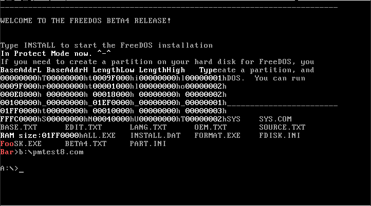
1.6.4 Interrupt and aberrant
- Interrupt entry table
- Mechanism
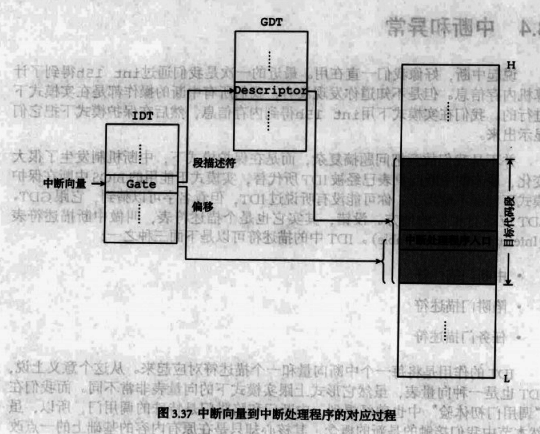
1.6.5 Implement a Interrupt
- source code
; ========================================== ; pmtest9c.asm ; 编译方法：nasm pmtest9c.asm -o pmtest9c.com ; ========================================== %include "pm.inc" ; 常量, 宏, 以及一些说明 PageDirBase0 equ 200000h ; 页目录开始地址: 2M PageTblBase0 equ 201000h ; 页表开始地址: 2M + 4K PageDirBase1 equ 210000h ; 页目录开始地址: 2M + 64K PageTblBase1 equ 211000h ; 页表开始地址: 2M + 64K + 4K LinearAddrDemo equ 00401000h ProcFoo equ 00401000h ProcBar equ 00501000h ProcPagingDemo equ 00301000h org 0100h jmp LABEL_BEGIN [SECTION .gdt] ; GDT ; 段基址, 段界限, 属性 LABEL_GDT: Descriptor 0, 0, 0 ; 空描述符 LABEL_DESC_NORMAL: Descriptor 0, 0ffffh, DA_DRW ; Normal 描述符 LABEL_DESC_FLAT_C: Descriptor 0, 0fffffh, DA_CR|DA_32|DA_LIMIT_4K; 0~4G LABEL_DESC_FLAT_RW: Descriptor 0, 0fffffh, DA_DRW|DA_LIMIT_4K ; 0~4G LABEL_DESC_CODE32: Descriptor 0, SegCode32Len-1, DA_CR|DA_32 ; 非一致代码段, 32 LABEL_DESC_CODE16: Descriptor 0, 0ffffh, DA_C ; 非一致代码段, 16 LABEL_DESC_DATA: Descriptor 0, DataLen-1, DA_DRW ; Data LABEL_DESC_STACK: Descriptor 0, TopOfStack, DA_DRWA|DA_32 ; Stack, 32 位 LABEL_DESC_VIDEO: Descriptor 0B8000h, 0ffffh, DA_DRW ; 显存首地址 ; GDT 结束 GdtLen equ $ - LABEL_GDT ; GDT长度 GdtPtr dw GdtLen - 1 ; GDT界限 dd 0 ; GDT基地址 ; GDT 选择子 SelectorNormal equ LABEL_DESC_NORMAL - LABEL_GDT SelectorFlatC equ LABEL_DESC_FLAT_C - LABEL_GDT SelectorFlatRW equ LABEL_DESC_FLAT_RW - LABEL_GDT SelectorCode32 equ LABEL_DESC_CODE32 - LABEL_GDT SelectorCode16 equ LABEL_DESC_CODE16 - LABEL_GDT SelectorData equ LABEL_DESC_DATA - LABEL_GDT SelectorStack equ LABEL_DESC_STACK - LABEL_GDT SelectorVideo equ LABEL_DESC_VIDEO - LABEL_GDT ; END of [SECTION .gdt] [SECTION .data1] ; 数据段 ALIGN 32 [BITS 32] LABEL_DATA: ; 实模式下使用这些符号 ; 字符串 _szPMMessage: db "In Protect Mode now. ^-^", 0Ah, 0Ah, 0 ; 进入保护模式后显示此字符串 _szMemChkTitle: db "BaseAddrL BaseAddrH LengthLow LengthHigh Type", 0Ah, 0 ; 进入保护模式后显示此字符串 _szRAMSize db "RAM size:", 0 _szReturn db 0Ah, 0 ; 变量 _wSPValueInRealMode dw 0 _dwMCRNumber: dd 0 ; Memory Check Result _dwDispPos: dd (80 * 6 + 0) * 2 ; 屏幕第 6 行, 第 0 列。 _dwMemSize: dd 0 _ARDStruct: ; Address Range Descriptor Structure _dwBaseAddrLow: dd 0 _dwBaseAddrHigh: dd 0 _dwLengthLow: dd 0 _dwLengthHigh: dd 0 _dwType: dd 0 _PageTableNumber dd 0 _MemChkBuf: times 256 db 0 ; 保护模式下使用这些符号 szPMMessage equ _szPMMessage - $$ szMemChkTitle equ _szMemChkTitle - $$ szRAMSize equ _szRAMSize - $$ szReturn equ _szReturn - $$ dwDispPos equ _dwDispPos - $$ dwMemSize equ _dwMemSize - $$ dwMCRNumber equ _dwMCRNumber - $$ ARDStruct equ _ARDStruct - $$ dwBaseAddrLow equ _dwBaseAddrLow - $$ dwBaseAddrHigh equ _dwBaseAddrHigh - $$ dwLengthLow equ _dwLengthLow - $$ dwLengthHigh equ _dwLengthHigh - $$ dwType equ _dwType - $$ MemChkBuf equ _MemChkBuf - $$ PageTableNumber equ _PageTableNumber- $$ DataLen equ $ - LABEL_DATA ; END of [SECTION .data1] ; IDT [SECTION .idt] ALIGN 32 [BITS 32] LABEL_IDT: ; 门 目标选择子, 偏移, DCount, 属性 %rep 128 Gate SelectorCode32, SpuriousHandler, 0, DA_386IGate %endrep .080h: Gate SelectorCode32, UserIntHandler, 0, DA_386IGate IdtLen equ $ - LABEL_IDT IdtPtr dw IdtLen - 1 ; 段界限 dd 0 ; 基地址 ; END of [SECTION .idt] ; 全局堆栈段 [SECTION .gs] ALIGN 32 [BITS 32] LABEL_STACK: times 512 db 0 TopOfStack equ $ - LABEL_STACK - 1 ; END of [SECTION .gs] [SECTION .s16] [BITS 16] LABEL_BEGIN: mov ax, cs mov ds, ax mov es, ax mov ss, ax mov sp, 0100h mov [LABEL_GO_BACK_TO_REAL+3], ax mov [_wSPValueInRealMode], sp ; 得到内存数 mov ebx, 0 mov di, _MemChkBuf .loop: mov eax, 0E820h mov ecx, 20 mov edx, 0534D4150h int 15h jc LABEL_MEM_CHK_FAIL add di, 20 inc dword [_dwMCRNumber] cmp ebx, 0 jne .loop jmp LABEL_MEM_CHK_OK LABEL_MEM_CHK_FAIL: mov dword [_dwMCRNumber], 0 LABEL_MEM_CHK_OK: ; 初始化 16 位代码段描述符 mov ax, cs movzx eax, ax shl eax, 4 add eax, LABEL_SEG_CODE16 mov word [LABEL_DESC_CODE16 + 2], ax shr eax, 16 mov byte [LABEL_DESC_CODE16 + 4], al mov byte [LABEL_DESC_CODE16 + 7], ah ; 初始化 32 位代码段描述符 xor eax, eax mov ax, cs shl eax, 4 add eax, LABEL_SEG_CODE32 mov word [LABEL_DESC_CODE32 + 2], ax shr eax, 16 mov byte [LABEL_DESC_CODE32 + 4], al mov byte [LABEL_DESC_CODE32 + 7], ah ; 初始化数据段描述符 xor eax, eax mov ax, ds shl eax, 4 add eax, LABEL_DATA mov word [LABEL_DESC_DATA + 2], ax shr eax, 16 mov byte [LABEL_DESC_DATA + 4], al mov byte [LABEL_DESC_DATA + 7], ah ; 初始化堆栈段描述符 xor eax, eax mov ax, ds shl eax, 4 add eax, LABEL_STACK mov word [LABEL_DESC_STACK + 2], ax shr eax, 16 mov byte [LABEL_DESC_STACK + 4], al mov byte [LABEL_DESC_STACK + 7], ah ; 为加载 GDTR 作准备 xor eax, eax mov ax, ds shl eax, 4 add eax, LABEL_GDT ; eax <- gdt 基地址 mov dword [GdtPtr + 2], eax ; [GdtPtr + 2] <- gdt 基地址 ; 为加载 IDTR 作准备 xor eax, eax mov ax, ds shl eax, 4 add eax, LABEL_IDT ; eax <- idt 基地址 mov dword [IdtPtr + 2], eax ; [IdtPtr + 2] <- idt 基地址 ; 加载 GDTR lgdt [GdtPtr] ; 关中断 cli ; 加载 IDTR lidt [IdtPtr] ; 打开地址线A20 in al, 92h or al, 00000010b out 92h, al ; 准备切换到保护模式 mov eax, cr0 or eax, 1 mov cr0, eax ; 真正进入保护模式 jmp dword SelectorCode32:0 ; 执行这一句会把 SelectorCode32 装入 cs, 并跳转到 Code32Selector:0 处 ;;;;;;;;;;;;;;;;;;;;;;;;;;;;;;;;;;;;;;;;;;;;;;;;;;;;;;;;;;;;;;;;;;;;;;;;;;;;;;;;;;;;;;; LABEL_REAL_ENTRY: ; 从保护模式跳回到实模式就到了这里 mov ax, cs mov ds, ax mov es, ax mov ss, ax mov sp, [_wSPValueInRealMode] in al, 92h ; ┓ and al, 11111101b ; ┣ 关闭 A20 地址线 out 92h, al ; ┛ ;sti ; 开中断 mov ax, 4c00h ; ┓ int 21h ; ┛回到 DOS ; END of [SECTION .s16] [SECTION .s32]; 32 位代码段. 由实模式跳入. [BITS 32] LABEL_SEG_CODE32: mov ax, SelectorData mov ds, ax ; 数据段选择子 mov es, ax mov ax, SelectorVideo mov gs, ax ; 视频段选择子 mov ax, SelectorStack mov ss, ax ; 堆栈段选择子 mov esp, TopOfStack call Init8259A int 080h jmp $ ; 下面显示一个字符串 push szPMMessage call DispStr add esp, 4 push szMemChkTitle call DispStr add esp, 4 call DispMemSize ; 显示内存信息 call PagingDemo ; 演示改变页目录的效果 ; 到此停止 jmp SelectorCode16:0 ; Init8259A --------------------------------------------------------------------------------------------- Init8259A: mov al, 011h out 020h, al ; 主8259, ICW1. call io_delay out 0A0h, al ; 从8259, ICW1. call io_delay mov al, 020h ; IRQ0 对应中断向量 0x20 out 021h, al ; 主8259, ICW2. call io_delay mov al, 028h ; IRQ8 对应中断向量 0x28 out 0A1h, al ; 从8259, ICW2. call io_delay mov al, 004h ; IR2 对应从8259 out 021h, al ; 主8259, ICW3. call io_delay mov al, 002h ; 对应主8259的 IR2 out 0A1h, al ; 从8259, ICW3. call io_delay mov al, 001h out 021h, al ; 主8259, ICW4. call io_delay out 0A1h, al ; 从8259, ICW4. call io_delay mov al, 11111110b ; 仅仅开启定时器中断 ;mov al, 11111111b ; 屏蔽主8259所有中断 out 021h, al ; 主8259, OCW1. call io_delay mov al, 11111111b ; 屏蔽从8259所有中断 out 0A1h, al ; 从8259, OCW1. call io_delay ret ; Init8259A --------------------------------------------------------------------------------------------- ;; ; SetRealmode8259A --------------------------------------------------------------------------------------------- ;; SetRealmode8259A: ;; mov ax, SelectorData ;; mov fs, ax ;; mov al, 017h ;; out 020h, al ; 主8259, ICW1. ;; call io_delay ;; mov al, 008h ; IRQ0 对应中断向量 0x8 ;; out 021h, al ; 主8259, ICW2. ;; call io_delay ;; mov al, 001h ;; out 021h, al ; 主8259, ICW4. ;; call io_delay ;; mov al, [fs:SavedIMREG] ; ┓恢复中断屏蔽寄存器(IMREG)的原值 ;; out 021h, al ; ┛ ;; call io_delay ;; ret ; SetRealmode8259A --------------------------------------------------------------------------------------------- io_delay: nop nop nop nop ret _UserIntHandler: UserIntHandler equ _UserIntHandler - $$ mov ah, 0Ch ; 0000: 黑底 1100: 红字 mov al, 'I' mov [gs:((80 * 0 + 70) * 2)], ax ; 屏幕第 0 行, 第 70 列。 iretd _SpuriousHandler: SpuriousHandler equ _SpuriousHandler - $$ mov ah, 0Ch ; 0000: 黑底 1100: 红字 mov al, '!' mov [gs:((80 * 0 + 75) * 2)], ax ; 屏幕第 0 行, 第 75 列。 jmp $ iretd ; 启动分页机制 -------------------------------------------------------------- SetupPaging: ; 根据内存大小计算应初始化多少PDE以及多少页表 xor edx, edx mov eax, [dwMemSize] mov ebx, 400000h ; 400000h = 4M = 4096 * 1024, 一个页表对应的内存大小 div ebx mov ecx, eax ; 此时 ecx 为页表的个数，也即 PDE 应该的个数 test edx, edx jz .no_remainder inc ecx ; 如果余数不为 0 就需增加一个页表 .no_remainder: mov [PageTableNumber], ecx ; 暂存页表个数 ; 为简化处理, 所有线性地址对应相等的物理地址. 并且不考虑内存空洞. ; 首先初始化页目录 mov ax, SelectorFlatRW mov es, ax mov edi, PageDirBase0 ; 此段首地址为 PageDirBase0 xor eax, eax mov eax, PageTblBase0 | PG_P | PG_USU | PG_RWW .1: stosd add eax, 4096 ; 为了简化, 所有页表在内存中是连续的. loop .1 ; 再初始化所有页表 mov eax, [PageTableNumber] ; 页表个数 mov ebx, 1024 ; 每个页表 1024 个 PTE mul ebx mov ecx, eax ; PTE个数 = 页表个数 * 1024 mov edi, PageTblBase0 ; 此段首地址为 PageTblBase0 xor eax, eax mov eax, PG_P | PG_USU | PG_RWW .2: stosd add eax, 4096 ; 每一页指向 4K 的空间 loop .2 mov eax, PageDirBase0 mov cr3, eax mov eax, cr0 or eax, 80000000h mov cr0, eax jmp short .3 .3: nop ret ; 分页机制启动完毕 ---------------------------------------------------------- ; 测试分页机制 -------------------------------------------------------------- PagingDemo: mov ax, cs mov ds, ax mov ax, SelectorFlatRW mov es, ax push LenFoo push OffsetFoo push ProcFoo call MemCpy add esp, 12 push LenBar push OffsetBar push ProcBar call MemCpy add esp, 12 push LenPagingDemoAll push OffsetPagingDemoProc push ProcPagingDemo call MemCpy add esp, 12 mov ax, SelectorData mov ds, ax ; 数据段选择子 mov es, ax call SetupPaging ; 启动分页 call SelectorFlatC:ProcPagingDemo call PSwitch ; 切换页目录，改变地址映射关系 call SelectorFlatC:ProcPagingDemo ret ; --------------------------------------------------------------------------- ; 切换页表 ------------------------------------------------------------------ PSwitch: ; 初始化页目录 mov ax, SelectorFlatRW mov es, ax mov edi, PageDirBase1 ; 此段首地址为 PageDirBase1 xor eax, eax mov eax, PageTblBase1 | PG_P | PG_USU | PG_RWW mov ecx, [PageTableNumber] .1: stosd add eax, 4096 ; 为了简化, 所有页表在内存中是连续的. loop .1 ; 再初始化所有页表 mov eax, [PageTableNumber] ; 页表个数 mov ebx, 1024 ; 每个页表 1024 个 PTE mul ebx mov ecx, eax ; PTE个数 = 页表个数 * 1024 mov edi, PageTblBase1 ; 此段首地址为 PageTblBase1 xor eax, eax mov eax, PG_P | PG_USU | PG_RWW .2: stosd add eax, 4096 ; 每一页指向 4K 的空间 loop .2 ; 在此假设内存是大于 8M 的 mov eax, LinearAddrDemo shr eax, 22 mov ebx, 4096 mul ebx mov ecx, eax mov eax, LinearAddrDemo shr eax, 12 and eax, 03FFh ; 1111111111b (10 bits) mov ebx, 4 mul ebx add eax, ecx add eax, PageTblBase1 mov dword [es:eax], ProcBar | PG_P | PG_USU | PG_RWW mov eax, PageDirBase1 mov cr3, eax jmp short .3 .3: nop ret ; --------------------------------------------------------------------------- PagingDemoProc: OffsetPagingDemoProc equ PagingDemoProc - $$ mov eax, LinearAddrDemo call eax retf LenPagingDemoAll equ $ - PagingDemoProc foo: OffsetFoo equ foo - $$ mov ah, 0Ch ; 0000: 黑底 1100: 红字 mov al, 'F' mov [gs:((80 * 17 + 0) * 2)], ax ; 屏幕第 17 行, 第 0 列。 mov al, 'o' mov [gs:((80 * 17 + 1) * 2)], ax ; 屏幕第 17 行, 第 1 列。 mov [gs:((80 * 17 + 2) * 2)], ax ; 屏幕第 17 行, 第 2 列。 ret LenFoo equ $ - foo bar: OffsetBar equ bar - $$ mov ah, 0Ch ; 0000: 黑底 1100: 红字 mov al, 'B' mov [gs:((80 * 18 + 0) * 2)], ax ; 屏幕第 18 行, 第 0 列。 mov al, 'a' mov [gs:((80 * 18 + 1) * 2)], ax ; 屏幕第 18 行, 第 1 列。 mov al, 'r' mov [gs:((80 * 18 + 2) * 2)], ax ; 屏幕第 18 行, 第 2 列。 ret LenBar equ $ - bar ; 显示内存信息 -------------------------------------------------------------- DispMemSize: push esi push edi push ecx mov esi, MemChkBuf mov ecx, [dwMCRNumber] ;for(int i=0;i<[MCRNumber];i++) // 每次得到一个ARDS(Address Range Descriptor Structure)结构 .loop: ;{ mov edx, 5 ; for(int j=0;j<5;j++) // 每次得到一个ARDS中的成员，共5个成员 mov edi, ARDStruct ; { // 依次显示：BaseAddrLow，BaseAddrHigh，LengthLow，LengthHigh，Type .1: ; push dword [esi] ; call DispInt ; DispInt(MemChkBuf[j*4]); // 显示一个成员 pop eax ; stosd ; ARDStruct[j*4] = MemChkBuf[j*4]; add esi, 4 ; dec edx ; cmp edx, 0 ; jnz .1 ; } call DispReturn ; printf("\n"); cmp dword [dwType], 1 ; if(Type == AddressRangeMemory) // AddressRangeMemory : 1, AddressRangeReserved : 2 jne .2 ; { mov eax, [dwBaseAddrLow] ; add eax, [dwLengthLow] ; cmp eax, [dwMemSize] ; if(BaseAddrLow + LengthLow > MemSize) jb .2 ; mov [dwMemSize], eax ; MemSize = BaseAddrLow + LengthLow; .2: ; } loop .loop ;} ; call DispReturn ;printf("\n"); push szRAMSize ; call DispStr ;printf("RAM size:"); add esp, 4 ; ; push dword [dwMemSize] ; call DispInt ;DispInt(MemSize); add esp, 4 ; pop ecx pop edi pop esi ret ; --------------------------------------------------------------------------- %include "lib.inc" ; 库函数 SegCode32Len equ $ - LABEL_SEG_CODE32 ; END of [SECTION .s32] ; 16 位代码段. 由 32 位代码段跳入, 跳出后到实模式 [SECTION .s16code] ALIGN 32 [BITS 16] LABEL_SEG_CODE16: ; 跳回实模式: mov ax, SelectorNormal mov ds, ax mov es, ax mov fs, ax mov gs, ax mov ss, ax mov eax, cr0 and eax, 7FFFFFFEh ; PE=0, PG=0 mov cr0, eax LABEL_GO_BACK_TO_REAL: jmp 0:LABEL_REAL_ENTRY ; 段地址会在程序开始处被设置成正确的值 Code16Len equ $ - LABEL_SEG_CODE16 ; END of [SECTION .s16code] - compile it
nasm pmtest9c.asm -o pmtest9c.com
- See the output(There is an "I" right the screen)
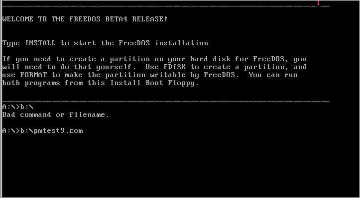
1.6.6 Implement a clock Interrupt
- compile it
nasm pmtest9.asm -o pmtest9.com
- See the output(at a moment)
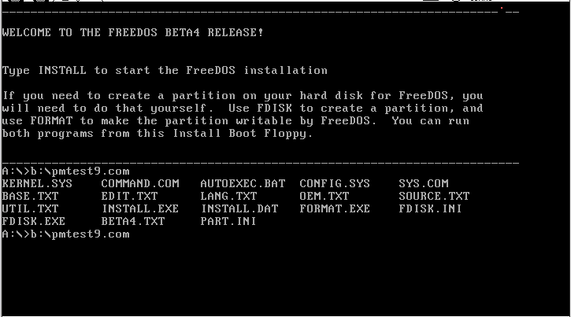
2 Summary
- The system design of the steps of
-
- initialize the hardware and load the system.
- obtain and test the parameters of the corresponding hardware and initialize such as the X387 and other hardware.
- load the GDT to the GDTR (first descriptor must be 0, at least one code segment and a data segment)
- load IDT to IDTR (must disable interrupts, After loading to open)
- set in CR0 PE = 1 (and PG bit set, and with JMP enjoyed) and reload the segment registers.
- page directory and page table and page directory base address in CR3
- CR0 PE = 1 && PG = 1 (set required JMP instruction refresh prefetch instruction queue, pentium without)
- the establishment of the LDT and it is loaded in the GDT indexes the LDTR (Optional)
- The establishment of the first tasks of the TSS and loaded it in the GDT index the TR (optional).
- From protected mode back to real mode steps
-
- if paging is enabled, follow these steps: A. the control is transferred to having the same mapping a linear address to make sure that the GDT and IDT are identical mapping. B. PG bit of CR0 register is cleared to 0. C. set CR3 = 0, so that cleaning the TLB
- the control is transferred to the segment having 64k limit (0x0FFFF) which will be made ??to the CS register is loaded in the real mode segment limit. Ensure that the GDT and IDT in the real address of the memory (0-1M).
- the segment registers SS, DS, ES, FS and GS load selector contains the following values ??of the descriptor These values ??apply to real-address mode: {Duan limit = 64K (0FFFF); byte granularity (G = 0); upward expansion (E = 0); writable (W = 1); exists (P = 1); base address = value}
- disable interrupts including NMI interrupt (available external circuit disabled)
- the CR0 register PE = 0
- Remote JMP instruction to jump to the real mode program. Cleaning instruction on the column and the CS access right is set to the appropriate value, this step is not required in PentiumCPU.
- LIDT instruction to load the real address of the interrupt vector table base address and segment limit.
- open the interrupt
- according to the needs of the real-address mode loaded into the segment registers.